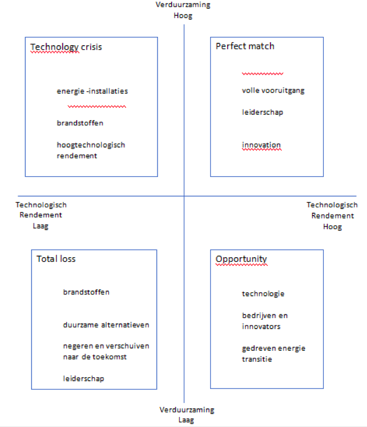
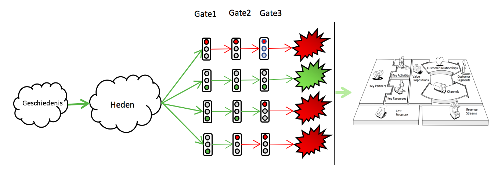

Bedrijfsperspectief
Naar verwachting zullen steeds meer particulieren duurzame energie opwekken. Dit zal ervoor zorgen dat de prijzen van duurzame energie sterk fluctueert, omdat er geen controlerende partij is. Als er geen controlerende partij is, zal de duurzame energie in de toekomst niet voor iedereen betaalbaar zijn. Daarnaast is de energie-infrastructuur en het distributienetwerk momenteel niet toereikend voor het voldoen aan de toekomstige energievraag.
Scenarioanalyse
Premium leiderschap staat centraal in dit scenario (zie figuur 1). De politiek neemt een leidende rol in het behalen van het Parijs-akkoord. Het land wordt wakker geschud en de bewustwording onder de mensen neemt toe.
Er worden veel investeringen gedaan in disruptieve technologieën, omdat het vertrouwen in disruptieve innovaties steeds groter wordt. Daarnaast wordt er steeds meer geld en tijd geïnvesteerd in R&D wat betreft het opwekken en opslaan van energie. Dit betekent ook dat de huidige technologieën verwaarloosd zullen worden.
De Business Roadmap
Het stoplichtenmodel wat wordt weergeven in figuur 2 beschrijft de route die een potentieel concept doorloopt. Het onderzoek begint altijd met symptomen van een probleem. Er wordt eerst gekeken naar wat er in het verleden heeft plaatsgevonden en dit wordt daarna verklaard.
Vervolgens wordt er gekeken naar gebeurtenissen die in het recente verleden hebben plaatsgevonden en in de nabije toekomst zullen plaatsvinden. Deze terugblik is van groot belang, omdat er naar aanleiding van de gebeurtenissen een voorzichtige toekomstvoorspelling kan worden opgesteld.
In het onderzoek zijn de genoemde concepten getoetst aan de hand van de gates. De gates fungeren als een selectieprocedure voor het toepassen van de concepten. De mate waarin concepten de volgende vragen doorstaan bepaalt of de adoptie een succes wordt.
Aan het eind van het proces wordt er een businessmodel opgesteld om meer duidelijkheid te geven aan het gekozen concept. Het individueel uitwerken van de negen velden in het Business Model Canvas maakt de huidige status inzichtelijk en kan helpen om een duidelijke en passende strategie te vinden.

Advies
Alliander ziet ontwikkelingen in wijk- en woningbouw plaatsvinden. Een kans is om tijdens de projecten van andere partijen de infrastructuur van SmartGrids aan te leggen. Alliander kan samen met betrokken partijen, zoals waterbeheer, woningbouwverenigingen, gasbeheerders en waterschappen, werkzaamheden verrichten om de kosten van grondwerk onderling te verdelen. Ook kan er beter rekening gehouden worden met de verschillende bestektekeningen. Deze stap heeft ook als voordeel dat lange onderhandelingen verleden tijd zijn.